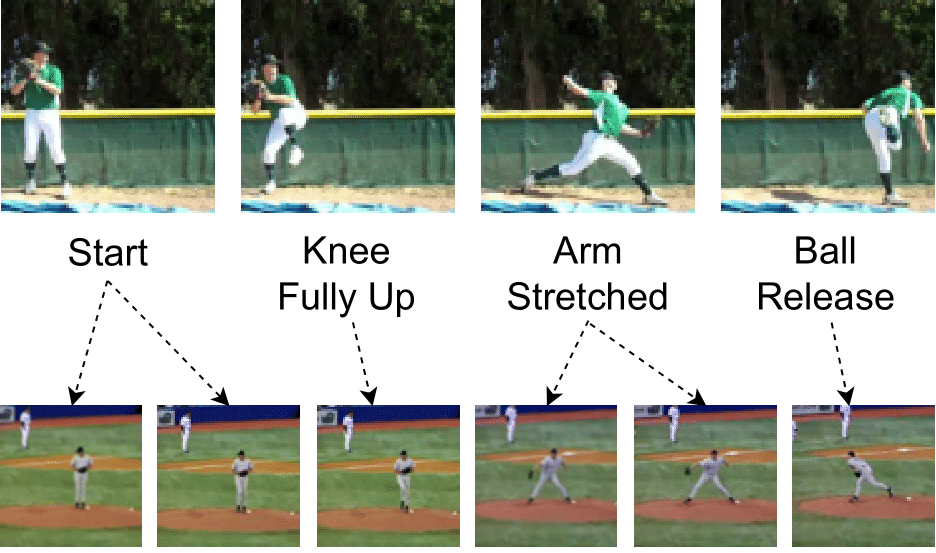
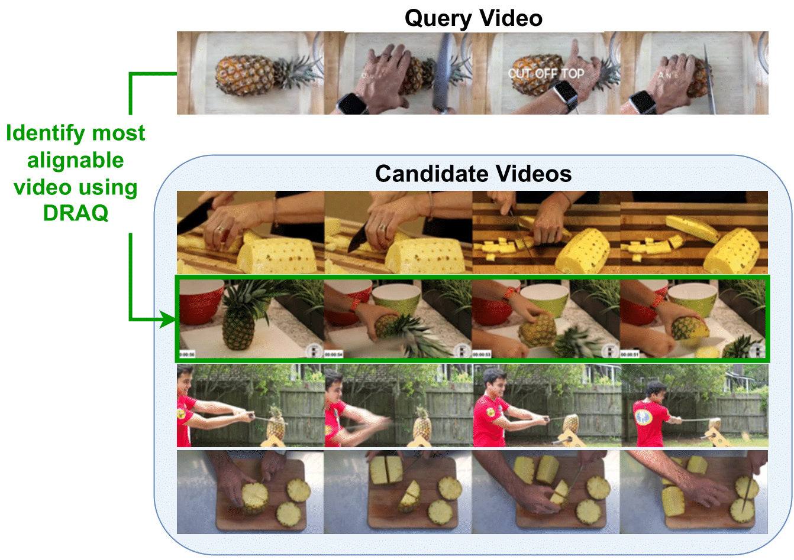

|

Regular Temporal Alignment: A pair of videos from the same action class is given. The goal is to align them, i.e., match their key-event frames. |

Proposed Alignable Video Retrieval (AVR): Given a query video, the goal is to find the best alignable video from candidate videos of the video search results. |
Alignable Video Retrieval. While some actions, like "baseball swing" (left), permit temporal alignment in virtually all cases due to their fixed sequence of action phases, general videos from other action classes, like "cutting pineapple" (right), exhibit much more variability. Knowledge of the action category alone is insufficient to identify alignable pairs for these cases, and a deeper temporal understanding of the videos is required to identify alignable videos. We propose DRAQ, an alignability score that can reliably identify the alignable video pair (red) among the set of candidates.
Temporal video alignment aims to synchronize the key events like object interactions or action phase transitions in two videos. Such methods could benefit various video editing, processing, and understanding tasks. However, existing approaches operate under the restrictive assumption that a suitable video pair for alignment is given, significantly limiting their broader applicability. To address this, we re-pose temporal alignment as a search problem and introduce the task of Alignable Video Retrieval (AVR). Given a query video, our approach can identify well-alignable videos from a large collection of clips and temporally synchronize them to the query. To achieve this, we make three key contributions: 1) we introduce DRAQ, a video alignability indicator to identify and re-rank the best alignable video from a set of candidates; 2) we propose an effective and generalizable frame-level video feature design to improve the alignment performance of several off-the-shelf feature representations, and 3) we propose a novel benchmark and evaluation protocol for AVR using cycle-consistency metrics. Our experiments on 3 datasets, including large-scale Kinetics700, demonstrate the effectiveness of our approach in identifying alignable video pairs from diverse datasets.
Model Overview. We introduce a model for Aligned Video Retrieval (AVR): Given an input query video clip, our model aims to find and temporally align the best matching video among a large collection of videos. Our approach has three stages: 1) candidate retrieval from a large-scale database, 2) re-ranking of the top candidates to identify the most alignable clip using our procedure DRAQ, and 3) alignment of query and top match using DTW on our contextualized frame-level features.
AVR evaluation via Cycle-Consistency. We illustrate the use of consistency errors to measure aligned video retrieval performance. A query video (bottom left), along with phase labels (colored regions) and frame indices (below the video), is warped to the top retrieval video (top). The aligned labels and frame indices are then warped back to the query again to complete the cycle. We then report the Frame Position Error (FPE) and the Cycle Phase Error (CPE) when the query contains phase information.
@inproceedings{dave2024sync,
title={Sync from the Sea: Retrieving Alignable Videos from Large-Scale Datasets},
author={Dave, Ishan and Caba, Fabian and Shah, Mubarak and Jenni, Simon},
booktitle={European Conference on Computer Vision (ECCV)},
year={2024}
}